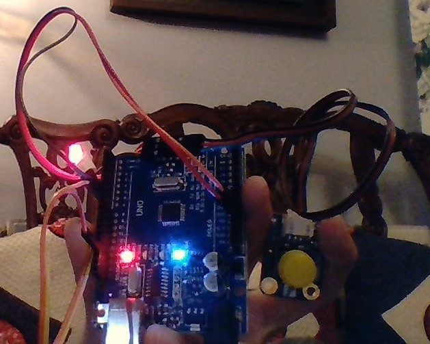

1.How to lighten the LED light with a botton.
2.How to use arduino to programme the light.
3.How to keep the lights on.

This is the code of the button
/*
Button
Turns on and off a light emitting diode(LED) connected to digital pin 13,
when pressing a pushbutton attached to pin 2.
The circuit:
- LED attached from pin 13 to ground
- pushbutton attached to pin 2 from +5V
- 10K resistor attached to pin 2 from ground
- Note: on most Arduinos there is already an LED on the board
attached to pin 13.
created 2005
by DojoDave
modified 30 Aug 2011
by Tom Igoe
This example code is in the public domain.
http://www.arduino.cc/en/Tutorial/Button
*/
// constants won't change. They're used here to set pin numbers:
const int buttonPin = 2; // the number of the pushbutton pin
const int ledPin = 13; // the number of the LED pin
// variables will change:
int buttonState = 0; // variable for reading the pushbutton status
void setup() {
// initialize the LED pin as an output:
pinMode(ledPin, OUTPUT);
// initialize the pushbutton pin as an input:
pinMode(buttonPin, INPUT);
}
void loop() {
// read the state of the pushbutton value:
buttonState = digitalRead(buttonPin);
// check if the pushbutton is pressed. If it is, the buttonState is HIGH:
if (buttonState == HIGH) {
// turn LED on:
digitalWrite(ledPin, HIGH);
} else {
// turn LED off:
digitalWrite(ledPin, LOW);
}
}